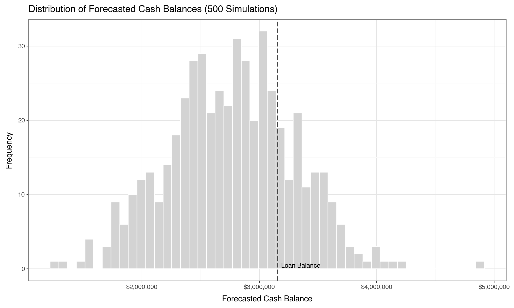
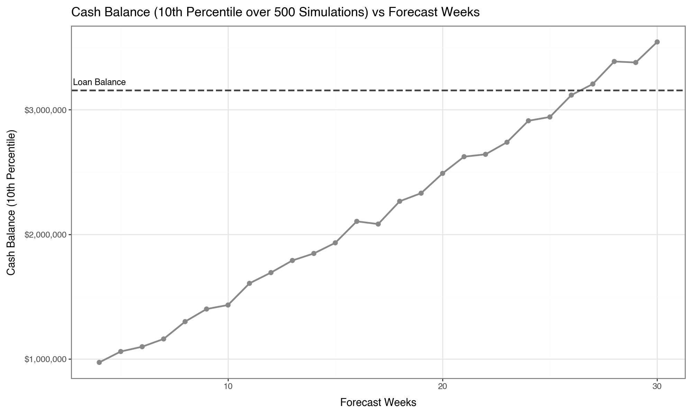

Muesli - Python Project 1 - Cash Balance Forecasting¶
Project Requirements¶
Project Objective¶
This assignment is designed as a structured analytical workflow, not a set of separate tasks — approach it as a connected process that builds progressively as new topics are covered in the subject:
-
Parameter Estimation (from Historical Data) - Use SQL and Python (pandas) to extract and prepare relevant data, and estimate model parameters (e.g., cost ranges, revenue ranges) from historical observations.
-
Simulation Model Construction - Implement a reusable Python simulation model that forecasts weekly cash balances, incorporating both inflows and outflows under uncertainty.
-
Model Testing - Test the model using a small number of runs to confirm the logic is correct and that key assumptions (e.g., timing of cash flows) are handled appropriately.
-
Monte Carlo Simulation - Run repeated simulations to generate a distribution of possible future cash balance outcomes.
-
Visualisation and Interpretation - Use visualisations to explore the simulated distribution of outcomes, and interpret what the results imply about variability, risk, and expected cash positions.
-
What-If Analysis and Decision-Making under Uncertainty - Use the simulation results to evaluate when the company can repay the remaining loan with a sufficiently high level of confidence, and justify the decision based on uncertainty, risk, and business context.
Project Contents¶
Having analysed Muesli Pty Ltd's cash flow situation (in the individual assignment), the CEO now wants a prediction model to forecast future cash flows — and consequently future cash balances — to help plan major expenditures in advance (e.g., purchasing additional Property, Plant & Equipment, or repaying debt).
- The company has outlined a model incorporating the various factors affecting week-to-week cash flow, including random variables. Build this model following the 6-step workflow above.
- The forecast starts on a specified date, using the cash balance at close of business (COB) that day as the opening balance.
- The script must simulate weekly cash inflows and outflows for a user-specified number of weeks.
- The predicted closing balance at the end of the forecast period is the output of a single simulation run.
- Both the start date and the forecast duration must be configurable via user input parameters.
- Run 500 simulations to generate a distribution of outcomes under uncertainty, supporting assessment of likely, conservative, and optimistic estimates of minimum future cash availability.
The output should:
- Include a histogram of the 500 simulated values, built with a Python visualisation library (plotnine is the subject's primary tool).
- Additional visualisations are encouraged: density plots, boxplots, time-series charts, etc., to illustrate week-to-week cash flow patterns or uncertainty ranges.
- Visualisations should be clear and informative, and used as part of the analytical workflow to support interpretation and decision-making — not treated as standalone outputs.
The discussion should:
- Draw directly on the visualisations to support conclusions.
- After the model is successfully implemented, complete a what-if analysis: determine, with a high level of confidence (e.g., 90%), the minimum number of weeks required for the company to accumulate sufficient cash to repay the remaining loan.
Model Variables and Implementation¶
The simulation model must include the following factors, calculated from 12 weeks of historical data. All generated random values must be integers drawn from a uniform distribution within the stated ranges.
| Variable | Description |
|---|---|
OB_Cash |
Opening cash balance: the balance of cash accounts as of close of business (COB) on the start date. |
OB_AR |
Opening Accounts Receivable (A/R) balance: the balance of A/R as of COB on the start date. Since all customers pay within 4 weeks, this balance will have been collected by the end of the simulation — include it as a one-time inflow, independent of simulation weeks. |
AP_Min, AP_Max |
Weekly minimum and maximum net changes in Accounts Payable (A/P) (important assumption for this assignment). Both debit (positive) and credit (negative) postings are included when calculating A/P net changes: a positive net change indicates a decrease in payables (cash outflow); a negative net change indicates an increase in payables (cash inflow). |
Cost_Fixed |
Fixed operating costs. For all cash expense accounts that remain stable week to week, calculate the combined average weekly outflow. Include this as a fixed weekly outflow. |
Cost_Var_Min, Cost_Var_Max |
Weekly minimum and maximum variable operating costs. For expense accounts with week-to-week variation, calculate the combined min and max observed range across historical weeks. Generate random values between the observed min and max using Python functions. |
Cost_Finance |
As the loan principal was repaid monthly, interest costs trended downward over time. Since the forecast model does not include further principal repayments, use the interest payment from the last observed week as a fixed weekly outflow. |
Ch10_Rev_Min, Ch10_Rev_MaxCh12_Rev_Min, Ch12_Rev_MaxCh14_Rev_Min, Ch14_Rev_Max |
Weekly minimum and maximum revenue per channel. Generate random values between the observed min and max weekly historical revenue to generate weekly revenue for each channel. These are not direct cash inflows — associated inflows depend on payment delays. |
Ch10_Pay_4WCh12_Pay_3W, Ch12_Pay_4WCh14_Pay_1W, Ch14_Pay_2W, Ch14_Pay_3W, Ch14_Pay_4W |
Percentages of weekly revenue collected as cash in each subsequent week after the revenue is earned: Channel 10 – 100% paid 4 weeks later. Channel 12 – 50% paid 3 weeks later, 50% paid 4 weeks later. Channel 14 – 25% paid each week, for each of the subsequent four weeks. These values are already set in the template code — do not change them. |
Project Demo¶
0. Preparation¶
0.1 Import Packages¶
import platform
import pyodbc
import sqlalchemy as sal
import warnings
import pandas as pd
import numpy as np
from plotnine import *
import random as rnd
0.2 Set Global Parameters¶
START_DATE = "2026-05-01" # Must be a Friday
WEEKS_HIST = 12
WEEKS_FCST = 16
START_DATE = pd.to_datetime(START_DATE)
sd_hist = pd.date_range(end = START_DATE, periods = WEEKS_HIST+2, freq="W-MON").to_list()[0]
ed_hist = pd.date_range(end = START_DATE, periods = WEEKS_HIST+1, freq="W-FRI").to_list()[-2]
sd_fcst = pd.date_range(start = START_DATE, periods = WEEKS_FCST, freq="W-FRI").to_list()[0]
ed_fcst = pd.date_range(start = START_DATE, periods = WEEKS_FCST, freq="W-FRI").to_list()[-1]
print(f"Analytical Date: {START_DATE.strftime('%Y-%m-%d')}")
print(f"Historical data period: {sd_hist.strftime('%Y-%m-%d')} to {ed_hist.strftime('%Y-%m-%d')}")
print(f"Forecast data period: {sd_fcst.strftime('%Y-%m-%d')} to {ed_fcst.strftime('%Y-%m-%d')}")
Analytical Date: 2026-05-01
Historical data period: 2026-02-02 to 2026-04-24
Forecast data period: 2026-05-01 to 2026-08-14
1. Collect and Process Data¶
1.1 Set Database Connection¶
def db_connect(_driver = None):
template = "mssql+pyodbc:///?odbc_connect=DRIVER={};SERVER=dlyle.database.windows.net;DATABASE=DWV;UID=muesli;PWD=Viz(Data);"
if not _driver is None:
driver = _driver
else:
print("Guessing driver based on", platform.system(), platform.release(), platform.machine(), platform.platform())
if platform.system() == "Darwin": #MacOS
if platform.machine() == "arm64": #M1 chip
driver = "/opt/homebrew/lib/libmsodbcsql.18.dylib"
else:
driver = "/Library/simba/sqlserverodbc/lib/libsqlserverodbc_sbu.dylib"
else: #Windows and anything else
driver = "{SQL Server}"
c_str = template.format(driver)
print(c_str)
print("Attempting connection")
cxn = sal.create_engine(c_str).connect()
print("Success!")
return cxn
def get_data(_sql, _driver = None):
try:
cxn = db_connect(_driver)
print("Attempting to retrieve data")
data = pd.read_sql(_sql, cxn)
cxn.close()
return data
except Exception as err:
warnings.warn(str(err))
# return None
return pd.DataFrame()
1.2 Collect and Process Data¶
1.2.1 Accounts Balance
Collect account balance data using SQL directly:
sql_balance = f"""--sql
WITH
Data_Accounting AS (
SELECT
GLP.Posting_Date,
GLPE.Document_Number,
GLA.Account_Number,
GLA.Account_Name,
GLA.Account_Group,
GLPE.DR_or_CR,
CASE
WHEN DR_or_CR = 'DR' AND Account_Group = 'BS-Assets' THEN Amount
WHEN DR_or_CR = 'CR' AND Account_Group = 'BS-Assets' THEN -1*Amount
WHEN DR_or_CR = 'DR' AND Account_Group = 'BS-Liabilities' THEN -1*Amount
WHEN DR_or_CR = 'CR' AND Account_Group = 'BS-Liabilities' THEN Amount
WHEN DR_or_CR = 'DR' AND Account_Group = 'BS-Equity' THEN -1*Amount
WHEN DR_or_CR = 'CR' AND Account_Group = 'BS-Equity' THEN Amount
END AS Amount_Signed
FROM GL_Accounts AS GLA
JOIN GL_Posting_Entries AS GLPE ON GLA.Account_Number = GLPE.Account_Number
JOIN GL_Postings AS GLP ON GLPE.Document_Number = GLP.Document_Number
WHERE GLA.Account_Group LIKE '%BS%'
AND GLP.Posting_Date <= '{ed_hist.strftime("%Y-%m-%d")} 23:59:59.999999'
)
SELECT
Account_Number,
Account_Name,
SUM(Amount_Signed) AS Balance
FROM Data_Accounting
WHERE Account_Name IN ('Bank Cash Account', 'Customers - Domestic Receivables', 'Accounts payable - Domestic', 'Bank Loan')
GROUP BY Account_Number, Account_Name
"""
data_balance = get_data(sql_balance)
data_balance
Guessing driver based on Darwin 25.5.0 arm64 macOS-26.5-arm64-arm-64bit
mssql+pyodbc:///?odbc_connect=DRIVER=/opt/homebrew/lib/libmsodbcsql.18.dylib;SERVER=dlyle.database.windows.net;DATABASE=DWV;UID=muesli;PWD=Viz(Data);
Attempting connection
Success!
Attempting to retrieve data
| | Account_Number | Account_Name | Balance |
|---|----------------|----------------------------------|------------|
| 0 | 0000160000 | Accounts payable - Domestic | 657209.90 |
| 1 | 0000140000 | Customers - Domestic Receivables | 1378844.23 |
| 2 | 0000113300 | Bank Cash Account | 979347.34 |
| 3 | 0000113101 | Bank Loan | 3156528.09 |
1.2.2 Cash Flow Data
Collect daily cash flow data using SQL:
sql_cf = f"""--sql
WITH
Data_GL_Cash AS (
SELECT
DISTINCT Document_Number
FROM GL_Accounts AS GLA
JOIN GL_Posting_Entries AS GLPE ON GLA.Account_Number = GLPE.Account_Number
WHERE GLA.Account_Name = 'Bank Cash Account'
)
SELECT
CONCAT(GLA.Account_Group, ' : ', GLA.Account_Name) AS Account,
CASE
WHEN DR_or_CR = 'DR' THEN GLPE.Amount * -1
WHEN DR_or_CR = 'CR' THEN GLPE.Amount
END AS Amount,
GLP.Posting_Date AS Date
FROM GL_Accounts AS GLA
JOIN GL_Posting_Entries AS GLPE ON GLA.Account_Number = GLPE.Account_Number
JOIN GL_Postings AS GLP ON GLPE.Document_Number = GLP.Document_Number
WHERE GLPE.Document_Number IN ( SELECT Document_Number FROM Data_GL_Cash)
AND GLP.Posting_Date BETWEEN '{sd_hist.strftime('%Y-%m-%d')} 00:00:00.000000' AND '{ed_hist.strftime('%Y-%m-%d')} 23:59:59.999999'
AND Account_Name != 'Bank Cash Account'
"""
data_cf_daily = get_data(sql_cf)
data_cf_daily
Guessing driver based on Darwin 25.5.0 arm64 macOS-26.5-arm64-arm-64bit
mssql+pyodbc:///?odbc_connect=DRIVER=/opt/homebrew/lib/libmsodbcsql.18.dylib;SERVER=dlyle.database.windows.net;DATABASE=DWV;UID=muesli;PWD=Viz(Data);
Attempting connection
Success!
Attempting to retrieve data
| | Account | Amount | Date |
|-----|---------------------------------------------------|-----------|------------|
| 0 | IS-Expenses : Shipping costs | -3000.0 | 2026-02-03 |
| 1 | IS-Expenses : Direct Labor Costs | -20000.0 | 2026-02-06 |
| 2 | IS-Expenses : Factory Overhead Expenses | -15000.0 | 2026-02-06 |
| 3 | IS-Expenses : Sales, General and Administrativ... | -40000.0 | 2026-02-06 |
| 4 | IS-Expenses : Shipping costs | -3000.0 | 2026-02-06 |
| ... | ... | ... | ... |
| 424 | BS-Liabilities : Accounts payable - Domestic | -316535.0 | 2026-03-26 |
| 425 | BS-Liabilities : Accounts payable - Domestic | -79400.0 | 2026-04-07 |
| 426 | BS-Liabilities : Accounts payable - Domestic | -206692.1 | 2026-04-09 |
| 427 | BS-Liabilities : Accounts payable - Domestic | -205343.5 | 2026-04-21 |
| 428 | BS-Liabilities : Accounts payable - Domestic | -87700.0 | 2026-04-21 |
Group cash flow data by week:
# Create "Week" column and using Friday to represent the week
data_cf_daily["Date"] = pd.to_datetime(data_cf_daily["Date"])
data_cf_daily["Week"] = data_cf_daily["Date"].dt.to_period("W-FRI").apply(lambda x: pd.to_datetime(x.end_time.date()))
# Summarize cash flow by account and week
data_cf_weekly = (
data_cf_daily
.groupby(["Account", "Week"])["Amount"]
.sum()
.reset_index()
)
# Display the final cash flow summary by account and week
data_cf_weekly.tail(10)
| | Account | Week | Amount |
|----|---------------------------------|------------|---------|
| 85 | IS-Expenses : Warehousing costs | 2026-02-20 | -4000.0 |
| 86 | IS-Expenses : Warehousing costs | 2026-02-27 | -3000.0 |
| 87 | IS-Expenses : Warehousing costs | 2026-03-06 | -4000.0 |
| 88 | IS-Expenses : Warehousing costs | 2026-03-13 | -5000.0 |
| 89 | IS-Expenses : Warehousing costs | 2026-03-20 | -5000.0 |
| 90 | IS-Expenses : Warehousing costs | 2026-03-27 | -4500.0 |
| 91 | IS-Expenses : Warehousing costs | 2026-04-03 | -4500.0 |
| 92 | IS-Expenses : Warehousing costs | 2026-04-10 | -5000.0 |
| 93 | IS-Expenses : Warehousing costs | 2026-04-17 | -4000.0 |
| 94 | IS-Expenses : Warehousing costs | 2026-04-24 | -3500.0 |
Identify account types:
# Calculate the mean amount for each account to help classify fixed vs variable costs
data_cf_weekly_mean = (
data_cf_weekly
.groupby("Account")["Amount"]
.mean()
.rename("Mean_Amount")
)
data_cf_weekly = pd.merge(data_cf_weekly, data_cf_weekly_mean, on="Account")
# CF account classification function
def cf_account_classify(row):
account = row["Account"]
if "Accounts payable - Domestic" in account:
return "AP"
elif "Interest expenses" in account:
return "Cost_Finance"
elif account.startswith("IS-"):
if row["Amount"] == row["Mean_Amount"]:
return "Cost_Fixed"
else:
return "Cost_Var"
else:
return "Others"
# Apply classification function to each row
data_cf_weekly["Account_Type"] = data_cf_weekly.apply(cf_account_classify, axis=1)
# Filter out "Others"
data_cf_weekly = data_cf_weekly[data_cf_weekly["Account_Type"] != "Others"].reset_index(drop=True)
# Display the classified data
data_cf_weekly.tail(10)
| | Account | Week | Amount | Mean_Amount | Account_Type |
|----|---------------------------------|------------|---------|--------------|--------------|
| 69 | IS-Expenses : Warehousing costs | 2026-02-20 | -4000.0 | -4208.333333 | Cost_Var |
| 70 | IS-Expenses : Warehousing costs | 2026-02-27 | -3000.0 | -4208.333333 | Cost_Var |
| 71 | IS-Expenses : Warehousing costs | 2026-03-06 | -4000.0 | -4208.333333 | Cost_Var |
| 72 | IS-Expenses : Warehousing costs | 2026-03-13 | -5000.0 | -4208.333333 | Cost_Var |
| 73 | IS-Expenses : Warehousing costs | 2026-03-20 | -5000.0 | -4208.333333 | Cost_Var |
| 74 | IS-Expenses : Warehousing costs | 2026-03-27 | -4500.0 | -4208.333333 | Cost_Var |
| 75 | IS-Expenses : Warehousing costs | 2026-04-03 | -4500.0 | -4208.333333 | Cost_Var |
| 76 | IS-Expenses : Warehousing costs | 2026-04-10 | -5000.0 | -4208.333333 | Cost_Var |
| 77 | IS-Expenses : Warehousing costs | 2026-04-17 | -4000.0 | -4208.333333 | Cost_Var |
| 78 | IS-Expenses : Warehousing costs | 2026-04-24 | -3500.0 | -4208.333333 | Cost_Var |
Group and summarize cash flow by account type:
# Group by account type and week
data_cf = (
data_cf_weekly
.groupby(["Week", "Account_Type"])["Amount"]
.sum()
.reset_index()
)
# Covert negative numbers to positive since all accounts retained are CF outflows
data_cf["Amount"] = data_cf["Amount"] * -1
# Display the final cash flow summary by account type and week
data_cf.tail(10)
| | Week | Account_Type | Amount |
|----|------------|--------------|----------|
| 33 | 2026-04-10 | Cost_Finance | 4144.0 |
| 34 | 2026-04-10 | Cost_Fixed | 75000.0 |
| 35 | 2026-04-10 | Cost_Var | 11000.0 |
| 36 | 2026-04-17 | Cost_Finance | 4144.0 |
| 37 | 2026-04-17 | Cost_Fixed | 75000.0 |
| 38 | 2026-04-17 | Cost_Var | 7000.0 |
| 39 | 2026-04-24 | AP | 293043.5 |
| 40 | 2026-04-24 | Cost_Finance | 4144.0 |
| 41 | 2026-04-24 | Cost_Fixed | 75000.0 |
| 42 | 2026-04-24 | Cost_Var | 9500.0 |
1.2.3 Sales
Collect daily sales data using SQL:
sql_sales = f"""--sql
SELECT
SOI.Document_Number AS Sales_ID,
SOI.Material_Code AS Material_Code,
SO.Delivery_Date AS Date,
SOI.Price AS Sales_Price,
SOI.Quantity AS Sales_Quantity,
SOI.Price * SOI.Quantity AS Sales_Revenue,
SO.Customer_ID AS Customer_ID,
-- Channels
CASE
WHEN C.Channel_Code = '10' THEN 'Hypermarkets'
WHEN C.Channel_Code = '12' THEN 'Grocery Stores'
WHEN C.Channel_Code = '14' THEN 'Corner Stores'
ELSE 'Others'
END AS Channel
FROM Sales_Order_Items AS SOI
INNER JOIN Sales_Orders AS SO ON SOI.Document_Number = SO.Document_Number
INNER JOIN Customers AS C ON C.Customer_ID = SO.Customer_ID
WHERE SO.Delivery_Date BETWEEN '{sd_hist.strftime("%Y-%m-%d")} 00:00:00.000000' AND '{ed_hist.strftime("%Y-%m-%d")} 23:59:59.999999'
"""
data_sales_daily = get_data(sql_sales)
data_sales_daily
Guessing driver based on Darwin 25.5.0 arm64 macOS-26.5-arm64-arm-64bit
mssql+pyodbc:///?odbc_connect=DRIVER=/opt/homebrew/lib/libmsodbcsql.18.dylib;SERVER=dlyle.database.windows.net;DATABASE=DWV;UID=muesli;PWD=Viz(Data);
Attempting connection
Success!
Attempting to retrieve data
| | Sales_ID | Material_Code | Date | Sales_Price | Sales_Quantity | Sales_Revenue | Customer_ID | Channel |
|-----|------------|---------------|------------|-------------|----------------|---------------|-------------|----------------|
| 0 | 0000003605 | BB-F02 | 2026-02-02 | 5.50 | 2318.0 | 12749.00 | 80120 | Grocery Stores |
| 1 | 0000003605 | BB-F16 | 2026-02-02 | 5.73 | 7175.0 | 41112.75 | 80120 | Grocery Stores |
| 2 | 0000003612 | BB-F02 | 2026-02-02 | 5.50 | 2000.0 | 11000.00 | 80148 | Grocery Stores |
| 3 | 0000003612 | BB-F14 | 2026-02-02 | 4.61 | 1402.0 | 6463.22 | 80148 | Grocery Stores |
| 4 | 0000003612 | BB-F16 | 2026-02-02 | 5.73 | 4265.0 | 24438.45 | 80148 | Grocery Stores |
| ... | ... | ... | ... | ... | ... | ... | ... | ... |
| 331 | 0000005028 | BB-F13 | 2026-04-24 | 6.60 | 6112.0 | 40339.20 | 80108 | Hypermarkets |
| 332 | 0000005028 | BB-F16 | 2026-04-24 | 5.36 | 3625.0 | 19430.00 | 80108 | Hypermarkets |
| 333 | 0000005033 | BB-F02 | 2026-04-24 | 5.01 | 4617.0 | 23131.17 | 80286 | Corner Stores |
| 334 | 0000005035 | BB-F02 | 2026-04-24 | 5.01 | 3799.0 | 19032.99 | 80210 | Corner Stores |
| 335 | 0000005036 | BB-F02 | 2026-04-24 | 5.01 | 4383.0 | 21958.83 | 80222 | Corner Stores |
Group and summarize sales data by channel and week:
# Create "Week" column and using Friday to represent the week
data_sales_daily["Date"] = pd.to_datetime(data_sales_daily["Date"])
data_sales_daily["Week"] = data_sales_daily["Date"].dt.to_period("W-FRI").apply(lambda x: pd.to_datetime(x.end_time.date()))
# Summarize sales revenue by channel and week
data_sales = (
data_sales_daily
.groupby(["Week", "Channel"])["Sales_Revenue"]
.sum()
.reset_index()
)
# Display the final sales summary by channel and week
data_sales.tail(10)
| | Week | Channel | Sales_Revenue |
|----|------------|----------------|---------------|
| 25 | 2026-04-03 | Grocery Stores | 358225.22 |
| 26 | 2026-04-03 | Hypermarkets | 48772.21 |
| 27 | 2026-04-10 | Corner Stores | 195730.64 |
| 28 | 2026-04-10 | Grocery Stores | 248687.31 |
| 29 | 2026-04-17 | Corner Stores | 22439.16 |
| 30 | 2026-04-17 | Grocery Stores | 411604.92 |
| 31 | 2026-04-17 | Hypermarkets | 101051.06 |
| 32 | 2026-04-24 | Corner Stores | 99685.80 |
| 33 | 2026-04-24 | Grocery Stores | 207461.87 |
| 34 | 2026-04-24 | Hypermarkets | 168159.32 |
2. Set Model Parameters¶
2.1 Initialize Model Parameters Dictionary¶
model_param = dict()
2.2 Get Estimated Parameters from Historical Data¶
2.2.1 Balances from Balance Sheet Accounts
def get_account_balance(account_name):
balance = data_balance[data_balance["Account_Name"] == account_name]["Balance"].iloc[-1]
return int(balance)
model_param["OB_Cash"] = get_account_balance("Bank Cash Account")
model_param["OB_AR"] = get_account_balance("Customers - Domestic Receivables")
model_param["OB_Loan"] = get_account_balance("Bank Loan")
2.2.2 Weekly Costs by Account Type
def get_cost_amounts(account_type, stat):
amount_col = data_cf[data_cf["Account_Type"] == account_type]["Amount"]
if stat == "min":
amount = amount_col.min()
elif stat == "max":
amount = amount_col.max()
elif stat == "last":
amount = amount_col.iloc[-1]
else:
raise ValueError("Invalid stat. Use 'min', 'max', or 'last'.")
return int(amount)
model_param["AP_Min"] = get_cost_amounts("AP", "min")
model_param["AP_Max"] = get_cost_amounts("AP", "max")
model_param["Cost_Fixed"] = get_cost_amounts("Cost_Fixed", "last")
model_param["Cost_Var_Min"] = get_cost_amounts("Cost_Var", "min")
model_param["Cost_Var_Max"] = get_cost_amounts("Cost_Var", "max")
model_param["Cost_Finance"] = get_cost_amounts("Cost_Finance", "last")
2.2.3 Weekly Sales Revenue by Channel
def get_sales_revenue(channel, stat):
revenue_col = data_sales[data_sales["Channel"] == channel]["Sales_Revenue"]
if stat == "min":
revenue = revenue_col.min()
elif stat == "max":
revenue = revenue_col.max()
else:
raise ValueError("Invalid stat. Use 'min' or 'max'.")
return int(revenue)
model_param[f"Ch10_Rev_Min"] = get_sales_revenue("Hypermarkets", "min")
model_param[f"Ch10_Rev_Max"] = get_sales_revenue("Hypermarkets", "max")
model_param[f"Ch12_Rev_Min"] = get_sales_revenue("Grocery Stores", "min")
model_param[f"Ch12_Rev_Max"] = get_sales_revenue("Grocery Stores", "max")
model_param[f"Ch14_Rev_Min"] = get_sales_revenue("Corner Stores", "min")
model_param[f"Ch14_Rev_Max"] = get_sales_revenue("Corner Stores", "max")
2.3 Set Constant Parameters Manually¶
model_param["Ch10_Pay_1W"] = 0
model_param["Ch10_Pay_2W"] = 0
model_param["Ch10_Pay_3W"] = 0
model_param["Ch10_Pay_4W"] = 1
model_param["Ch12_Pay_1W"] = 0
model_param["Ch12_Pay_2W"] = 0
model_param["Ch12_Pay_3W"] = 0.5
model_param["Ch12_Pay_4W"] = 0.5
model_param["Ch14_Pay_1W"] = 0.25
model_param["Ch14_Pay_2W"] = 0.25
model_param["Ch14_Pay_3W"] = 0.25
model_param["Ch14_Pay_4W"] = 0.25
2.4 Summary of Model Parameters¶
model_param
{
'OB_Cash': 979347,
'OB_AR': 1378844,
'OB_Loan': 3156528,
'AP_Min': 85200,
'AP_Max': 434035,
'Cost_Fixed': 75000,
'Cost_Var_Min': 7000,
'Cost_Var_Max': 11000,
'Cost_Finance': 4144,
'Ch10_Rev_Min': 28443,
'Ch10_Rev_Max': 175540,
'Ch12_Rev_Min': 108064,
'Ch12_Rev_Max': 413437,
'Ch14_Rev_Min': 22439,
'Ch14_Rev_Max': 199821,
'Ch10_Pay_1W': 0,
'Ch10_Pay_2W': 0,
'Ch10_Pay_3W': 0,
'Ch10_Pay_4W': 1,
'Ch12_Pay_1W': 0,
'Ch12_Pay_2W': 0,
'Ch12_Pay_3W': 0.5,
'Ch12_Pay_4W': 0.5,
'Ch14_Pay_1W': 0.25,
'Ch14_Pay_2W': 0.25,
'Ch14_Pay_3W': 0.25,
'Ch14_Pay_4W': 0.25
}
3. Simulation Model¶
3.1 Main Simulation Program¶
def cash_forecast(_model_vars, _start, _weeks, _disp_sched = False):
ix = pd.date_range(start = _start, periods = _weeks + 4, freq="W-FRI")
cols = ["AccPay", "FixCost", "VarCost", "FinCost", "Ch10Rev", "Ch10Cash", "Ch12Rev", "Ch12Cash", "Ch14Rev", "Ch14Cash"]
schedule = pd.DataFrame(index = ix, columns = cols, dtype="int64").fillna(0)
# Run week by week simulation
for d in pd.date_range(start = _start, periods = _weeks, freq="W-FRI"):
d1 = d + pd.DateOffset(weeks = 1)
d2 = d + pd.DateOffset(weeks = 2)
d3 = d + pd.DateOffset(weeks = 3)
d4 = d + pd.DateOffset(weeks = 4)
# AP
schedule.loc[d, "AccPay"] = -1 * rnd.randint(_model_vars["AP_Min"], _model_vars["AP_Max"])
# Costs: Variable & Fixed & Finance
schedule.loc[d, "VarCost"] = -1 * rnd.randint(_model_vars["Cost_Var_Min"], _model_vars["Cost_Var_Max"])
schedule.loc[d, "FixCost"] = -1 * _model_vars["Cost_Fixed"]
schedule.loc[d, "FinCost"] = -1 * _model_vars["Cost_Finance"]
# Sales
def rev_to_cash(df_schedule, _model_vars, channel):
rev = rnd.randint(_model_vars[f"{channel}_Rev_Min"], _model_vars[f"{channel}_Rev_Max"])
df_schedule.loc[d, f"{channel}Rev"] = rev
df_schedule.loc[d1, f"{channel}Cash"] += rev * _model_vars[f"{channel}_Pay_1W"]
df_schedule.loc[d2, f"{channel}Cash"] += rev * _model_vars[f"{channel}_Pay_2W"]
df_schedule.loc[d3, f"{channel}Cash"] += rev * _model_vars[f"{channel}_Pay_3W"]
df_schedule.loc[d4, f"{channel}Cash"] += rev * _model_vars[f"{channel}_Pay_4W"]
rev_to_cash(schedule, _model_vars, "Ch10")
rev_to_cash(schedule, _model_vars, "Ch12")
rev_to_cash(schedule, _model_vars, "Ch14")
# Keep only relevant rows and columns; calculate total change in cash position
end = _start + pd.DateOffset(weeks = _weeks-1)
forecast = schedule.loc[_start:end,["Ch10Cash", "Ch12Cash", "Ch14Cash", "AccPay", "FixCost", "VarCost", "FinCost"]]
net_change = float(forecast.values.sum()) # Add all cell values
if _disp_sched:
display(schedule)
print(f"CH10 Total Rev => Cash: {schedule.Ch10Rev.sum()} => {schedule.Ch10Cash.sum()}")
print(f"CH12 Total Rev => Cash: {schedule.Ch12Rev.sum()} => {schedule.Ch12Cash.sum()}")
print(f"CH14 Total Rev => Cash: {schedule.Ch14Rev.sum()} => {schedule.Ch14Cash.sum()}")
display(forecast)
# Calculate and return closing balance
forecast_closing_balance = _model_vars["OB_Cash"] + _model_vars["OB_AR"] + net_change
return forecast_closing_balance
3.2 Test One Simulation¶
print("Predicted balance:", cash_forecast(model_param, sd_fcst, WEEKS_FCST, True))
| | AccPay | FixCost | VarCost | FinCost | Ch10Rev | Ch10Cash | Ch12Rev | Ch12Cash | Ch14Rev | Ch14Cash |
|------------|-----------|----------|----------|---------|----------|----------|----------|----------|----------|-----------|
| 2026-05-01 | -165731.0 | -75000.0 | -10222.0 | -4144.0 | 139156.0 | 0.0 | 390077.0 | 0.0 | 149669.0 | 0.00 |
| 2026-05-08 | -156599.0 | -75000.0 | -10299.0 | -4144.0 | 129379.0 | 0.0 | 366793.0 | 0.0 | 169787.0 | 37417.25 |
| 2026-05-15 | -278366.0 | -75000.0 | -9595.0 | -4144.0 | 93169.0 | 0.0 | 141626.0 | 0.0 | 184042.0 | 79864.00 |
| 2026-05-22 | -123237.0 | -75000.0 | -10315.0 | -4144.0 | 51874.0 | 0.0 | 118402.0 | 195038.5 | 178214.0 | 125874.50 |
| 2026-05-29 | -394075.0 | -75000.0 | -8987.0 | -4144.0 | 128661.0 | 139156.0 | 110350.0 | 378435.0 | 34709.0 | 170428.00 |
| 2026-06-05 | -144916.0 | -75000.0 | -8951.0 | -4144.0 | 81738.0 | 129379.0 | 321875.0 | 254209.5 | 36389.0 | 141688.00 |
| 2026-06-12 | -147170.0 | -75000.0 | -7295.0 | -4144.0 | 169005.0 | 93169.0 | 263123.0 | 130014.0 | 36506.0 | 108338.50 |
| 2026-06-19 | -162557.0 | -75000.0 | -7071.0 | -4144.0 | 134860.0 | 51874.0 | 139541.0 | 114376.0 | 169990.0 | 71454.50 |
| 2026-06-26 | -231214.0 | -75000.0 | -10875.0 | -4144.0 | 31976.0 | 128661.0 | 233530.0 | 216112.5 | 79287.0 | 69398.50 |
| 2026-07-03 | -196837.0 | -75000.0 | -10788.0 | -4144.0 | 175303.0 | 81738.0 | 113258.0 | 292499.0 | 46840.0 | 80543.00 |
| 2026-07-10 | -153524.0 | -75000.0 | -7478.0 | -4144.0 | 121145.0 | 169005.0 | 324474.0 | 201332.0 | 165940.0 | 83155.75 |
| 2026-07-17 | -143742.0 | -75000.0 | -9264.0 | -4144.0 | 161377.0 | 134860.0 | 209263.0 | 186535.5 | 31623.0 | 115514.25 |
| 2026-07-24 | -203387.0 | -75000.0 | -8108.0 | -4144.0 | 136138.0 | 31976.0 | 194421.0 | 173394.0 | 171154.0 | 80922.50 |
| 2026-07-31 | -128141.0 | -75000.0 | -10031.0 | -4144.0 | 166465.0 | 175303.0 | 209606.0 | 218866.0 | 177829.0 | 103889.25 |
| 2026-08-07 | -189479.0 | -75000.0 | -8795.0 | -4144.0 | 72938.0 | 121145.0 | 403264.0 | 266868.5 | 58420.0 | 136636.50 |
| 2026-08-14 | -417833.0 | -75000.0 | -10517.0 | -4144.0 | 147481.0 | 161377.0 | 233941.0 | 201842.0 | 33568.0 | 109756.50 |
| 2026-08-21 | 0.0 | 0.0 | 0.0 | 0.0 | 0.0 | 136138.0 | 0.0 | 202013.5 | 0.0 | 110242.75 |
| 2026-08-28 | 0.0 | 0.0 | 0.0 | 0.0 | 0.0 | 166465.0 | 0.0 | 306435.0 | 0.0 | 67454.25 |
| 2026-09-04 | 0.0 | 0.0 | 0.0 | 0.0 | 0.0 | 72938.0 | 0.0 | 318602.5 | 0.0 | 22997.00 |
| 2026-09-11 | 0.0 | 0.0 | 0.0 | 0.0 | 0.0 | 147481.0 | 0.0 | 116970.5 | 0.0 | 8392.00 |
CH10 Total Rev => Cash: 1940665.0 => 1940665.0
CH12 Total Rev => Cash: 3773544.0 => 3773544.0
CH14 Total Rev => Cash: 1723967.0 => 1723967.0
| | Ch10Cash | Ch12Cash | Ch14Cash | AccPay | FixCost | VarCost | FinCost |
|------------|----------|----------|-----------|-----------|----------|----------|---------|
| 2026-05-01 | 0.0 | 0.0 | 0.00 | -165731.0 | -75000.0 | -10222.0 | -4144.0 |
| 2026-05-08 | 0.0 | 0.0 | 37417.25 | -156599.0 | -75000.0 | -10299.0 | -4144.0 |
| 2026-05-15 | 0.0 | 0.0 | 79864.00 | -278366.0 | -75000.0 | -9595.0 | -4144.0 |
| 2026-05-22 | 0.0 | 195038.5 | 125874.50 | -123237.0 | -75000.0 | -10315.0 | -4144.0 |
| 2026-05-29 | 139156.0 | 378435.0 | 170428.00 | -394075.0 | -75000.0 | -8987.0 | -4144.0 |
| 2026-06-05 | 129379.0 | 254209.5 | 141688.00 | -144916.0 | -75000.0 | -8951.0 | -4144.0 |
| 2026-06-12 | 93169.0 | 130014.0 | 108338.50 | -147170.0 | -75000.0 | -7295.0 | -4144.0 |
| 2026-06-19 | 51874.0 | 114376.0 | 71454.50 | -162557.0 | -75000.0 | -7071.0 | -4144.0 |
| 2026-06-26 | 128661.0 | 216112.5 | 69398.50 | -231214.0 | -75000.0 | -10875.0 | -4144.0 |
| 2026-07-03 | 81738.0 | 292499.0 | 80543.00 | -196837.0 | -75000.0 | -10788.0 | -4144.0 |
| 2026-07-10 | 169005.0 | 201332.0 | 83155.75 | -153524.0 | -75000.0 | -7478.0 | -4144.0 |
| 2026-07-17 | 134860.0 | 186535.5 | 115514.25 | -143742.0 | -75000.0 | -9264.0 | -4144.0 |
| 2026-07-24 | 31976.0 | 173394.0 | 80922.50 | -203387.0 | -75000.0 | -8108.0 | -4144.0 |
| 2026-07-31 | 175303.0 | 218866.0 | 103889.25 | -128141.0 | -75000.0 | -10031.0 | -4144.0 |
| 2026-08-07 | 121145.0 | 266868.5 | 136636.50 | -189479.0 | -75000.0 | -8795.0 | -4144.0 |
| 2026-08-14 | 161377.0 | 201842.0 | 109756.50 | -417833.0 | -75000.0 | -10517.0 | -4144.0 |
Predicted balance: 3468534.5
3.3 Test Simulation for 50 Iterations¶
forecast_balances_test = []
for s in range(50):
eb = cash_forecast(model_param, sd_fcst, WEEKS_FCST)
forecast_balances_test.append(eb)
print(forecast_balances_test)
[3332225.5, 2252314.75, 2886936.25, 3112153.25, 2954745.75, 1833217.0, 3661983.5, 2129133.75, 2704265.5, 3262421.5, 1670963.0, 2969844.75, 2040269.75, 2619356.25, 2809779.75, 2443968.0, 2847598.5, 2503321.75, 2514663.25, 2909018.75, 2695737.75, 3255429.0, 994490.0, 2748505.0, 3088367.25, 2892438.25, 3326883.25, 2012856.5, 3238070.75, 1952400.0, 2460498.5, 3366383.0, 3613499.25, 2756008.5, 2995484.0, 2362602.25, 2956508.25, 3990414.0, 2710956.5, 3644522.25, 2839308.5, 1964140.25, 2794333.5, 2171168.0, 2782932.75, 2639400.0, 2955478.5, 2872676.75, 2675613.75, 2753068.5]
4. Simulating Future Cash Balances¶
4.1 Distribution of Simulated Cash Balances¶
NSIM = 500
forecast_balances = []
for s in range(NSIM):
eb = cash_forecast(model_param, sd_fcst, WEEKS_FCST)
forecast_balances.append(eb)
df_balances = pd.DataFrame({"balance": forecast_balances})
df_balances.describe()
| | balance |
|-------|--------------|
| count | 5.000000e+02 |
| mean | 2.763316e+06 |
| std | 5.324979e+05 |
| min | 1.289208e+06 |
| 25% | 2.403444e+06 |
| 50% | 2.786005e+06 |
| 75% | 3.106460e+06 |
| max | 4.912527e+06 |
# How many of the 500 simulations exceeded the Bank Loan balance
(df_balances["balance"] > model_param["OB_Loan"]).mean()
np.float64(0.222)
plot_balances = (
ggplot(df_balances, aes(x="balance")) +
geom_histogram(bins=50, fill="lightgrey", color="white") +
geom_vline(xintercept=model_param["OB_Loan"], color="#444444", linetype="dashed", size=1) +
annotate(
"text",
x=model_param["OB_Loan"] + 30000,
y=0,
label="Loan Balance",
color="black",
ha="left",
va="bottom",
size=9
) +
labs(
title=f"Distribution of Forecasted Cash Balances ({NSIM} Simulations)",
x="Forecasted Cash Balance",
y="Frequency"
) +
theme_bw() +
theme(
figure_size=(10, 6),
plot_title=element_text(ha="left"),
) +
scale_x_continuous(labels=lambda lst: [f"${x:,.0f}" for x in lst])
)
plot_balances

4.2 10th Percentile of Simulated Cash Balances for Differnet Forecast Weeks¶
week_range = list(range(4, 31))
cash_percentile_10_list = []
for i in week_range:
cash_balances = []
for s in range(NSIM):
cf = cash_forecast(model_param, sd_fcst, i)
cash_balances.append(cf)
cash_percentile_10 = np.percentile(cash_balances, 10)
cash_percentile_10_list.append(cash_percentile_10)
df_cash_p10 = pd.DataFrame({
"weeks": week_range,
"percentile_10": cash_percentile_10_list
}).sort_values("weeks").reset_index(drop=True)
df_cash_p10[df_cash_p10["percentile_10"] > model_param["OB_Loan"]].head(1)
| weeks | percentile_10 |
|-------|---------------|
| 27 | 3206435.775 |
plot_cash_p10 = (
ggplot(df_cash_p10, aes(x="weeks", y="percentile_10")) +
geom_line(color="#888888", size=1) +
geom_point(color="#888888", size=2) +
geom_hline(yintercept=model_param["OB_Loan"], color="#444444", linetype="dashed", size=1) + # 深灰色
scale_y_continuous(labels=lambda l: ["${:,.1f}M".format(int(x) / 1000000) for x in l]) +
annotate(
"text",
x=min(week_range),
y=model_param["OB_Loan"] + 30000,
label="Loan Balance",
color="black",
va="bottom",
size=9
) +
labs(
title=f"Cash Balance (10th Percentile over {NSIM} Simulations) vs Forecast Weeks",
x="Forecast Weeks",
y=f"Cash Balance (10th Percentile)"
) +
theme_bw() +
theme(
figure_size=(10, 6),
plot_title=element_text(ha="left"),
)
)
plot_cash_p10
